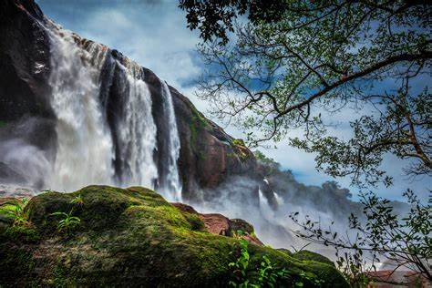
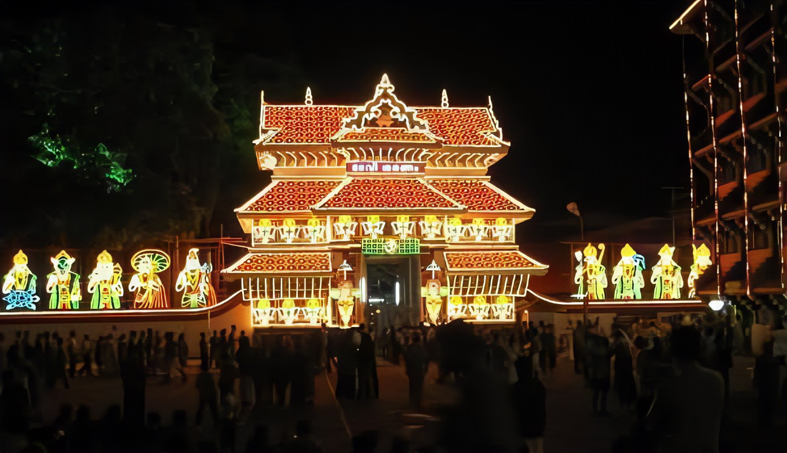
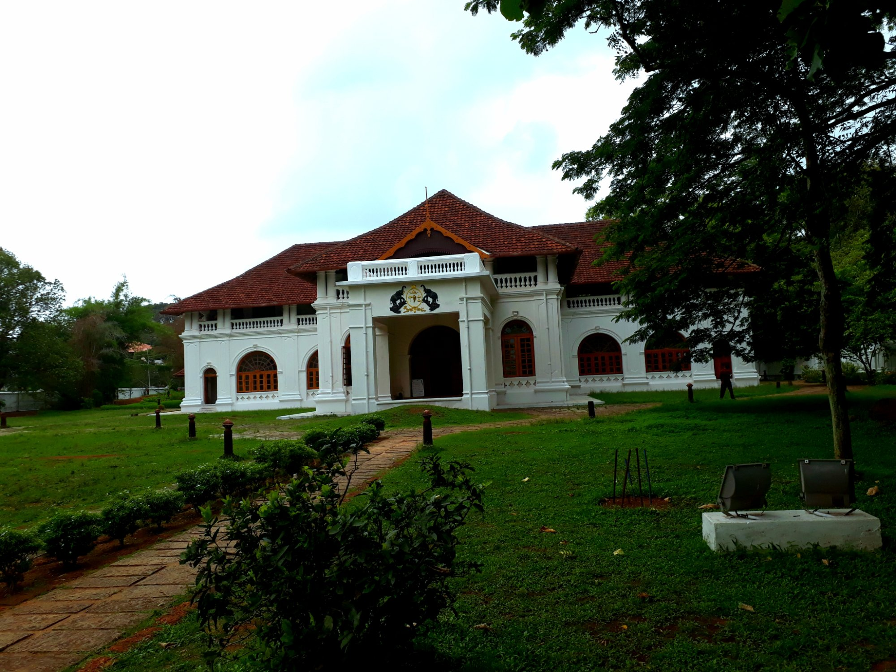

Thrissur (formerly Trichur) is a district of Kerala situated in the central part of that state. Spanning an area of about 3,032 km2 (1,171 sq mi), Thrissur district is home to over 9% of Kerala's population.
Thrissur district is bordered by the districts of Palakkad and Malappuram to the north, and the districts of Ernakulam and Idukki to the south and Coimbatore to the east. The Arabian Sea lies to the west and Western Ghats stretches towards the east. It is part of the historical Malabar Coast, which has been trading internationally since ancient times. The main language spoken is Malayalam
Tourist attraction in Thrissur!
Vadakkumnathan Temple
Vadakkumnathan Temple is an ancient Hindu temple dedicated to Shiva at city of Thrissur, of Kerala state in India. This temple is a classical example of the architectural style of Kerala and has one monumental tower on each of the four sides in addition to a kuttambalam. Mural paintings depicting various scenes from the Mahabharata can be seen inside the temple. The shrines and the Kuttambalam display vignettes carved in wood. The temple, along with the mural paintings, has been declared as a National Monument by India under the AMASR Act. According to popular local lore, this is the first temple built by Parasurama, the sixth avatara of Vishnu. Thekkinkadu Maidan, encircling the Vadakkumnathan Temple, is the main venue of the renowned Thrissur Pooram festival.
Athirappilly waterfalls

As you walk down the stone slabs that lead to the base of the Athirappilly waterfalls, a mysterious serenity overcomes you. It is Kerala's most famous and largest waterfall at over 80 ft high. The sight of the water crashing onto the ground leaves you with a sense of wonder at the sheer power and magnificence of nature. Located around 63 km from Thrissur district, it is a perennial picnic spot for people in the area and beyond. Its surrounding greenery is perfect for walks and picnics with loved ones. Lying at the entrance to the Sholayar forest ranges, it is a part of the Chalakudy River which calls the Western Ghats its home.
Read More
Paramekkavu Bagavathi Temple

Paramekkavu Bagavathi Temple is one of the largest Bagavathi temples in Kerala located in Thrissur City. Sakthan Thampuran ordained the temples into two groups, namely "Paramekkavu side" and "Thiruvambady side" for Thrissur Pooram which is the biggest festival in South India and Kerala. These two groups are headed by the principal participants, Paramekkavu Bagavathi Temple at Thrissur Swaraj Round and Thiruvambadi Sri Krishna Temple at Shoranur road. The two temples are hardly 500 metres apart.[1] Thiruvambadi Sri Krishna Temple is one of the two groups participating in Thrissur Pooram.[2] The Paramekkavu temple devaswom have a school known as Paramekkavu Vidya Mandir at MLA road near Kutoor and one KG section near to the temple itself
Shakthan Thampuran Palace

Shakthan Thampuran Palace is situated in City of Thrissur in Kerala state, India. It is named as Vadakkekara Palace, was reconstructed in Kerala-Dutch style in 1795 by Ramavarma Thampuran of the erstwhile Princely State of Cochin, well as Sakthan Thampuran is preserved by Archaeological Department. The palace was converted into a museum in 2005 by State.